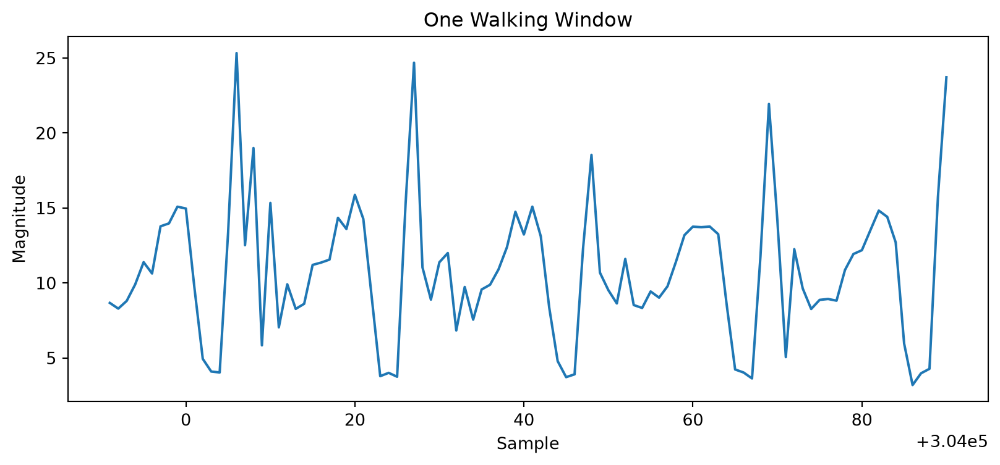

from pathlib import Path
import sys
import numpy as np
import matplotlib.pyplot as plt
current_path = Path.cwd().resolve()
for parent in [current_path] + list(current_path.parents):
if (parent / "app").exists():
PROJECT_ROOT = parent
break
else:
raise RuntimeError("Could not find project root containing app/ directory.")
sys.path.insert(0, str(PROJECT_ROOT))
from app.config import WINDOW_SIZE
from app.data_loader import load_wisdm_phone_accel
from app.windowing import create_windows, create_grouped_windows
DATA_DIR = PROJECT_ROOT / "data"
df = load_wisdm_phone_accel(DATA_DIR)
df["magnitude"] = np.sqrt(
df["x"] ** 2 + df["y"] ** 2 + df["z"] ** 2
)5 Windowing
5.1 Learning Objectives
After completing this chapter, you should be able to
- explain why continuous sensor streams must be segmented into windows,
- use reusable windowing code from the
app/package, - create windows for one activity,
- create windows safely per subject and activity,
- understand how window size affects live prediction.
5.2 Setup
ImportantSoftware Engineering Principle
This chapter does not redefine create_windows().
Instead, it imports reusable project code from app.windowing.
This follows the Don’t Repeat Yourself (DRY) principle.
5.3 Why Do We Need Windowing?
Wearable sensors produce a continuous stream of measurements.
Classical machine learning algorithms expect fixed-size samples.
Windowing bridges this gap by splitting a continuous stream into equally sized segments.
5.4 Step 1 — Create Windows for Walking
walking_df = (
df[df["activity"] == "walking"]
.sort_values("timestamp")
.copy()
)
walking_windows = create_windows(
walking_df,
window_size=WINDOW_SIZE,
)
len(walking_windows)27985.5 Step 2 — Inspect One Window
first_window = walking_windows[0]
first_window.head()| subject_id | activity_code | timestamp | x | y | z | activity | magnitude | |
|---|---|---|---|---|---|---|---|---|
| 303991 | 1623 | A | 2520219142823 | -0.152512 | -8.585220 | -1.219192 | walking | 8.672698 |
| 303992 | 1623 | A | 2520269496827 | 0.999466 | -8.196548 | -0.758926 | walking | 8.292063 |
| 303993 | 1623 | A | 2520319850830 | 0.450241 | -8.701187 | -1.290024 | walking | 8.807811 |
| 303994 | 1623 | A | 2520370204834 | -0.042175 | -9.739563 | -1.787415 | walking | 9.902309 |
| 303995 | 1623 | A | 2520420558838 | 3.551483 | -10.745132 | -1.266403 | walking | 11.387479 |
first_window.shape(100, 8)5.6 Step 3 — Visualize One Window
plt.figure(figsize=(10, 4))
plt.plot(first_window["magnitude"])
plt.title("One Walking Window")
plt.xlabel("Sample")
plt.ylabel("Magnitude")
plt.show()
5.7 Step 4 — Create Windows for the Entire Dataset
all_windows = create_grouped_windows(
df,
window_size=WINDOW_SIZE,
)
len(all_windows)8060
WarningCommon Pitfall
Always create windows separately for each subject and activity.
Otherwise, a window may contain multiple activities.
5.8 Checkpoint
- Why do we need windowing?
- What does a 100-sample window represent at 20 Hz?
- Why should windows not span multiple activities?
- Why is the window size relevant for live prediction?
5.9 Summary
In this chapter you learned
- why windowing is necessary,
- how reusable project code is imported,
- how to create windows safely,
- why window size controls the trade-off between stability and responsiveness.
In the next chapter we will extract numerical features from every window.